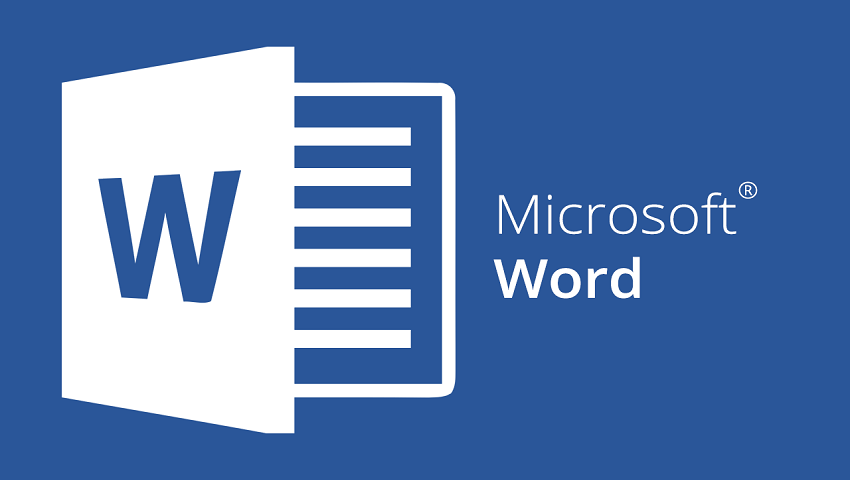
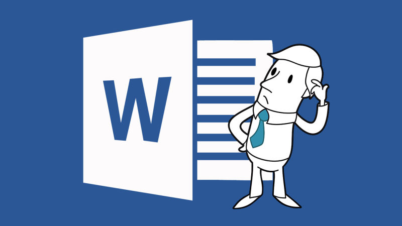

Word

O Microsoft Word é um dos aplicativos mais populares do Pacote Office da Microsoft. Ele é um processador de texto que permite criar, editar, formatar e imprimir documentos de texto.
História:
O Microsoft Word foi lançado pela primeira vez em 1983 pela Microsoft Corporation. Inicialmente disponível apenas para o sistema operacional DOS, o Word rapidamente ganhou popularidade devido à sua interface gráfica amigável e recursos avançados de processamento de texto.
O Word oferece uma ampla gama de recursos e funcionalidades que permitem a criação e edição de documentos de texto profissionais. Alguns dos recursos mais comuns incluem:
Ferramentas de formatação: o Word permite formatar texto, como alterar a fonte, tamanho e estilo, aplicar negrito, itálico e sublinhado, alinhar parágrafos, recuar e espaçar linhas, entre outros.
Inserção de imagens e objetos: é possível adicionar imagens, gráficos, tabelas, formas e outros objetos em documentos do Word para melhorar a aparência e transmitir informações visualmente.
Verificação ortográfica e gramatical: o Word possui recursos de correção automática, verificação ortográfica e gramatical para ajudar a detectar erros de digitação e melhorar a precisão do texto.
Revisão e colaboração: é possível realizar revisões em documentos, rastrear alterações feitas por diferentes colaboradores e adicionar comentários para facilitar a colaboração em equipe.
Estilos e temas: o Word oferece estilos pré-definidos e temas que permitem aplicar formatação consistente em todo o documento ou em partes específicas.
Ferramentas de pesquisa e substituição:é possível localizar palavras ou frases específicas em um documento e substituí-las automaticamente por outras.
Ferramentas de criação de índice, sumário e referências: o Word possui recursos para criar índices, sumários automáticos e adicionar referências cruzadas para facilitar a navegação e a estruturação do documento.
Integração com outros aplicativos e serviços:
O Word possui integração com outros aplicativos e serviços do Pacote Office, como Excel, PowerPoint e Outlook. Isso permite inserir e editar dados de planilhas, criar apresentações com conteúdo do Word e enviar documentos por email diretamente do Word.

Atalhos do Word
| Atalho |
Função |
| Ctrl + C |
Copiar |
| Ctrl + X |
Recortar |
| Ctrl + V |
Colar |
| Ctrl + Z |
Desfazer |
| Ctrl + Y |
Refazer |
| Ctrl + B |
Negrito |
| Ctrl + I |
Itálico |
| Ctrl + U |
Sublinhado |
| Ctrl + L |
Alinhar à esquerda |
| Ctrl + E |
Alinhar ao centro |